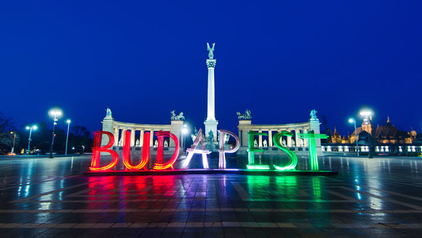

ბუდაპეშტის მეტროპოლიტენი ერთ-ერთი უძველესია მსოფლიოში და პირველი - კონტინენტურ ევროპაში. მისი მშენებლობა 1894 წელს დაიწყო ანდრაშის პროსპექტის ქვეშ, ხაზი კი 1896 წელს გაიხსნა უნგრეთის სახელმწიფოებრიობის ათასწლოვან იუბილესთან დაკავშირებით. ამჟამად მისი ყველა ხაზის საერთო სიგრძე 37 ათას 600 კილომეტრს შეადგენს, სამუშაო დღეებში კი ბუდაპეშტის მეტროპოლიტენით საშუალოდ 1 200 000 ადამიანი სარგებლობს.
ბუდაპეშტში მეტროს 4 ხაზი მოქმედებს:
- M1 ყვითელი;
- M2 წითელი;
- M3 ლურჯი;
- M4 მწვანე;
- M5 იასამნისფერი - მშენებარე.
მუშაობის საათები: 04:30-11:00.
ბუდაპეშტის მეტროში ნამდვილად არ დაიკარგებით: ყველგან მიმთითებელი აბრები და წარწერებია. მატარებლის ყველა ვაგონშია მოთავსებული მეტროპოლიტენის სქემა, ტაბლოზე კი მომდევნო სადგურის დასახელება იწერება.
M1, M2 da M3 ხაზები იკვეთება ცენტრალურ სადგურზე Deák Ferenc tér. აქ შეგიძლიათ მეტროს ერთი ხაზიდან მეორეზე გადაჯდეთ, ოღონდ ამისთვის ახალი ბილეთის შეძენა მოგიწევთ.
მეტროს ბილეთი 350 ფორინტი ღირს. მისი შეძენა სპეციალურ ნარინჯისფერ ტერმინალებში შეგიძლიათ მეტროში ჩასვლამდე. გარდა ამისა, არსებობს სპეციალური ბილეთიც - Metro Transfer Ticket. მისი ფასი 530 ფორინტია და ის ერთი ხაზიდან მეორეზე გადაჯდომის უფლებას გაძლევთ.
თუ Budapest Card გაქვთ, შეუზღუდავად იმგზავრებთ და გადაჯდებით იმდენჯერ, რამდენჯერაც მოისურვებთ (ცხადია, ამ ბარათის მოქმედების ვადის განმავლობაში). უფრო დეტალური ინფორმაციის მისაღებად იხილეთ ბუდაპეშტის საზოგადოებრივი ტრანსპორტი.
ბილეთის შეძენის შემდეგ, მეტროს შესასვლელთან ნარინჯისფერ პატარა ყუთებს დაინახავთ. ბილეთი მასში უნდა დააკომპოსტიროთ. ამ დროს მასზე თარიღი და დრო დაიბეჭდება. ბილეთი მგზავრობის ბოლომდე შეინახეთ. თუ ასე არ მოიქცევით, აუცილებლად დაგაჯარიმებენ. ადგილზე 8000 ფორინტის გადახდა მოგიწევთ, მოგვიანებით - 16000 ფორინტის. ასე რომ, დაიმახსოვრეთ: მხოლოდ ბილეთის შეძენა საკმარისი არაა. ის უნდა დააკომპოსტიროთ!!!

M1 ყვითელი ხაზის სადგურებიდან გამოვყოთ: Vörösmarty tér (ეს ქალაქის ცენტრია), Deák Ferenc tér (M2/M3 ხაზზე გადასვლა), Széchenyi Fürdő (სეჩენის საბანაო), Mexikói út (აქ ქალაქის პარკია).
M2 წითელი ხაზის სადგურებიდან გამოვყოთ: Déli Pályaudvar (სამხრეთის რკინიგზის სადგური), Kossuth Lajos tér (აქ პარლამენტის შენობაა), Deák Ferenc tér (M1/M3 ხაზზე გადასვლა), Keleti Pályaudvar (აღმოსავლეთის სადგური).
M3 ლურჯი ხაზის სადგურებიდან გამოვყოთ: Nyugati Pályaudvar (დასავლეთის რკინიგზის სადგური), Deák Ferenc tér (M1/M2 ხაზზე გადასვლა), Népliget (ნეპლიგეტის ავტოსადგური - ამ სადგურიდან შეგიძლიათ ვენაში გაემგზავროთ Flixbus-ის მშვენიერი ავტობუსით), Kőbánya-Kispest - ეს მნიშვნელოვანი სადგურია: აქედან 200E ავტობუსით ბუდაპეშტის აეროპორტში მოხვდებით.
M4 მწვანე ხაზის სადგურებიდან გამოვყოთ: Keleti Pályaudvar (აღმოსავლეთის რკინიგზის სადგური), Szent Gellért tér (გელერტის საბანაო), Kelenföldi pályaudvar (სამხრეთ-დასავლეთის რკინიგზის სადგური).
© 2019 ყველა უფლება დაცულია